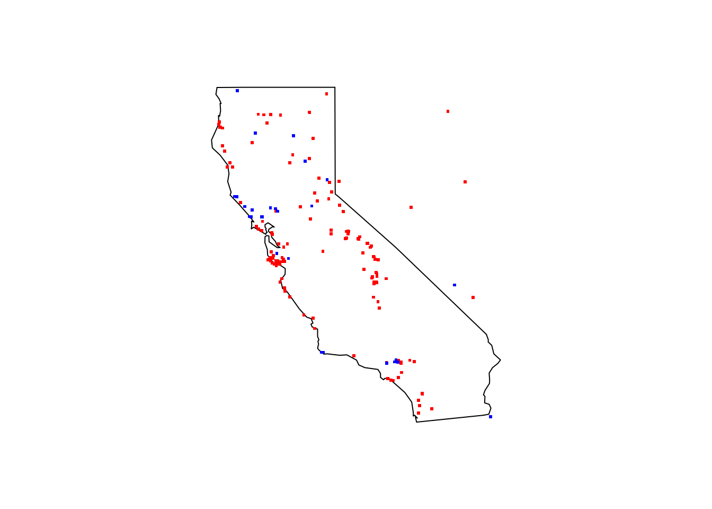
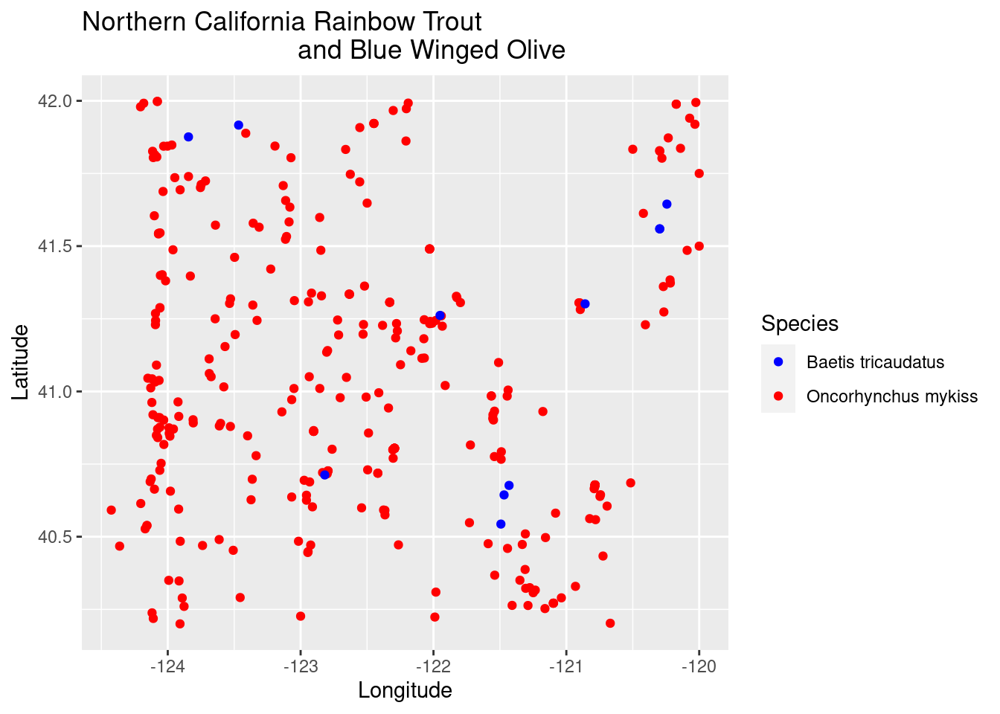

library(rgbif)
library(tidyverse)
library(data.table)
library(maps)
library(leaflet)Trout and Food Species
species distribution
modeling
GBIF
GIS
maps
data
trout
–Overlapping Species Occurance Data

In this post we will look at some spatial data of Rainbow Trout (Oncorhynchus mykiss) and one of their food sources Blue Winged Olives (Baetis tricaudatus). We will take a look using publicly available observation data from the GBIF database. See previous posts here and here for other examples of species occurrence data.
Load the necessary R libraries.
Pull in the species observation data from GBIF.
rb_trout <- occ_data(scientificName = "Oncorhynchus mykiss", hasCoordinate = TRUE, limit = 1000)
bw_olive <- occ_data(scientificName = "Baetis tricaudatus", hasCoordinate = TRUE, limit = 1000)Subset these datasets for only a few pieces of data.
rb_trout_coords <- rb_trout$data[ , c("decimalLongitude", "decimalLatitude",
"occurrenceStatus", "coordinateUncertaintyInMeters", "references")]
bw_olive_coords <- bw_olive$data[ , c("decimalLongitude", "decimalLatitude",
"occurrenceStatus", "coordinateUncertaintyInMeters", "references")]Plot on a map of California. Rainbow trout in red and Blue winged Olives in blue.
maps::map(database = "state", region = "california")
points(rb_trout_coords[ , c("decimalLongitude", "decimalLatitude")], pch = ".", col = "red", cex = 3)
points(bw_olive_coords[ , c("decimalLongitude", "decimalLatitude")], pch = ".", col = "blue", cex = 3)
Subset our search to only Northern California and combine the query for both species.
norcal_geometry <- paste('POLYGON((-124.4323 42.0021, -120 42.0021, -120 40.194, -124.4323 40.194, -124.4323 42.0021))')
species <- c("Oncorhynchus mykiss", "Baetis tricaudatus")
species_data <- occ_data(scientificName = species, hasCoordinate = TRUE, limit = 10000,
geometry = norcal_geometry)
summary(species_data) Length Class Mode
Oncorhynchus mykiss 2 -none- list
Baetis tricaudatus 2 -none- listName the individual lists within the species_data object and pull out the relevant data for plotting.
species_data_coords_list <- vector("list", length(species_data))
names(species_data_coords_list) <- species
names(species_data_coords_list)[1] "Oncorhynchus mykiss" "Baetis tricaudatus" for (x in species) {
coords <- species_data[[x]]$data[ , c("decimalLongitude", "decimalLatitude", "occurrenceStatus", "coordinateUncertaintyInMeters", "institutionCode", "references")]
species_data_coords_list[[x]] <- data.frame(species = x, coords)
}Combine into single long dataframe for easier plotting.
trout_df <- rbindlist(species_data_coords_list, fill = T)There are only a few observations of the Blue Winged Olives that overlap the Rainbow Trout in this range.
species_plot1 <- ggplot(trout_df, aes(x=decimalLongitude, y = decimalLatitude,
color = species)) +
geom_point() +
scale_color_manual(values =
c("Oncorhynchus mykiss" = "red",
"Baetis tricaudatus" = "blue")) +
labs(color = "Species",
title = "Northern California Rainbow Trout
and Blue Winged Olive") +
ylab("Latitude") + xlab("Longitude")
species_plot1
Plot the data on an actual map. The overlapping data points for Blue Winged Olives and Rainbow Trout are on the Trinity River, the McCloud River, and Rush Creek in the North Eastern part of the state in Modoc county.
palette <- colorFactor(c("blue", "red"), domain = c("Oncorhynchus mykiss", "Baetis tricaudatus"))
leaflet(trout_df) %>% addTiles() %>%
addCircleMarkers(~decimalLongitude, ~decimalLatitude,
color = ~palette(species),
stroke = FALSE, fillOpacity = 0.5
)Next up for this dataset is taking a look at dates of observations and overlapping those with weather and stream flow data from those river systems.